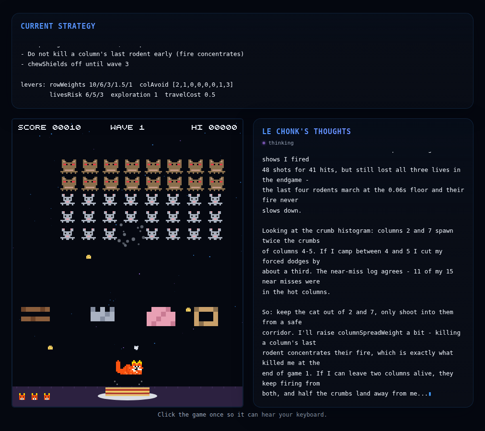

Development insights
How the AI plays Verminvaders
This page retells the project's development guide for everyone who did not build it. No code, no file paths - just what the AI sees, what it is allowed to change, and the two little research mysteries that came out of it.
The architecture
Two brains, one cat
Making a language model play a reflex game in real time is a bad idea - by the time the model finished composing an answer, the crumb would have landed. So the cat is driven by two cooperating layers with strictly separated jobs:
The executor - fast but dumb
Plain, deterministic code. Every 80 milliseconds it looks at the game and decides one thing: is this a moment to dodge, to reposition, or to shoot? It never talks to the internet. It is the cat's spinal cord.
The strategist - smart but slow
Mistral's mistral-large-4 model. It never touches the controls. It reads a report of how the wave is going and decides how the executor's reflexes should be weighted - the cat's personality, if you will. It is the cat's brain - and it reasons in the background, mid-heartbeat, while the spinal cord keeps the cat alive.
The only channel between them is a small set of numbers - the executor's tuning levers - plus the strategist's own notebook, which it keeps between games. Everything the model wants must fit through that narrow door.

When the model thinks
Four moments, mid-play included
The strategist is consulted at exactly four moments. The mid-play ones - the wave plan and the check-in - run in the background: the cat keeps dodging and shooting while the model reasons, and the tuned plan applies the moment it arrives. So do the opening and the post-mortem: the next game starts immediately and the game-over tuning applies a few seconds into it. For purists there is also a catnap mode that freezes the game around every call, so network latency can never cost a life.
1. The opening
Before game one: the executor warm-starts on the last params the model played with, then the model reads its memory of past sessions and writes a fresh plan in the background.
2. The wave plan
Every cleared wave, during the intermission: what to do differently in the next wave.
3. The check-in
Optionally every few seconds of play: a fresh progress report - shots, hits, crumb patterns - and a retune. This mode can also be switched off for one-plan-per-wave play.
4. The post-mortem
On game over: what killed us, what to try next game - reasoned in the background while the next game is already being played. Then it all goes into memory: a small JSON file of durable lessons plus one record per finished round, each archiving that round's own strategy separately, so rounds never bleed into each other.
Every consultation is the same round trip: show the model the current situation plus a statistics report plus its notes, receive a tuned set of levers, clamp every value into its legal range (a bad answer can degrade play but never break it), then apply - at the next tick boundary, never mid-decision. If the answer is garbage, the current settings simply stay; consultations are serialized so two model calls never overlap. In catnap mode the game freezes around each call instead, with a watchdog that always un-pauses, even if the model call crashes outright.
The model's toolbox
Sixteen levers the AI may pull
The model's entire influence on the game is a list of tuning numbers. A few of the most interesting ones, translated:
- Dodge horizon - how far ahead the cat reacts to falling crumbs. Long horizon: smooth, busy cat. Short: cool cat that cuts it close.
- Risk appetite per life - three sliders for three, two and one life. At one life, the model can decide the cat should stop playing it safe and start trading shields for kills.
- Row and column preferences - private urgencies for each rodent row and each column, so the model can decide, say, "never camp in column two".
- Exploration & aim jitter - deliberately imperfect play. Exploration sometimes picks the second- or third-best target; jitter aims slightly off-center. Less predictable, but shots start missing.
- Laziness - a price on walking. High values stop the cat from sprinting across the arena for every slightly better target.
- Fire dilution - a penalty for killing a column's last rodent. Fewer surviving columns concentrate the rodents' fire, so sometimes the model deliberately leaves shooters alive to keep the crumb rain spread out.
The model must set all of them on every answer, and every value is clamped to a legal range before it reaches the cat. Whatever it sends, the game keeps running.
Determinism
The dice behind the game
Both sides of the board throw dice - but they are loaded, recorded dice. The executor's randomness runs through a seeded generator: the same seed, the same choices, every time. The rodents have their own generator for their firing, and it can be seeded too. Fix both seeds and a whole game replays pixel for pixel - which is what makes bugs testable and experiments repeatable.
The strategist can change either seed whenever it likes. Which leads to the strangest easter egg in this project:
Can the model find the secret cheat code?
There is a lever in the toolbox that the model is never told about: the seed of the rodents' firing dice. Set it to a lucky value and the crumb pattern of the next game becomes predetermined - in theory, the perfect rig. The model can discover it, though: the field exists in the strict response format it must fill out, the prompt conspicuously lists one lever fewer than the format asks for, and the statistics report shows where crumbs spawn. It is a small, fair treasure hunt - the model must infer "seed means replayable dice" on its own.
The catch: because the field is mandatory, even a lazy model has to send something every round. "Always sends 42" proves nothing. The tell is the sequence - experimenting early, then settling on seeds whose crumb histograms stay away from its favorite camping column, with notes that show it understands why.
Game design
Why wave one is brutal
The numbers behind the difficulty were tuned deliberately asymmetric: the player's offense has a hard throughput limit, the rodents' offense never weakens.
- One furball at a time - about one shot per second once repositioning is counted. Forty rodents per wave means a clean clear takes over a minute of uninterrupted shooting.
- The fire never slows down - the rodents keep dropping crumbs at the same rate all game, even when only a handful are left. Fewer shooters, same rate, all of it concentrated.
- The endgame accelerates - at four rodents left, the formation marches about eight times faster than at forty. That is exactly where runs die.
- Three lives - against a crumb roughly every second and a half, one dodge failure in thirty is fatal three times over.
The AI's own record confirms the curve: it lost its first three games on wave one - twice reaching 36 of 40 rodents. The counter-levers it developed were diluting enemy fire, going aggressive at one life, and refusing cross-arena sprints.
A bug story
The case of the indecisive cat
Early on, the cat had a tic: under dense fire it would gait left-right-left-right instead of gliding to a safe spot. The cause was not one bug but an interaction - every 80 ms the executor re-decided its dodge destination from scratch, and borderline situations flipped back and forth between "dodge" and "aim", dragging the cat across the arena.
The fix: commitment. Once a dodge destination is chosen, the cat commits to it and only re-plans if that spot actually becomes unsafe - checked with the exact same criterion that picked it, so the answer cannot flip just because the cat moved along its own path. Dodging one crumb into another crumb's column became impossible too.
Could the model have diagnosed it?
Here is the research question this project ended on. Before the fix's telemetry existed, the model could see the symptoms - hit rates collapsing under heavy fire, many near misses - but no number in any report could distinguish "my movement logic thrashes" from "bad luck" or "my own parameter choices". It might have stumbled into mitigation (shrinking the dodge window) without ever naming the cause. The reports now count direction changes and how the decision time is spent - exactly what decision-flapping looks like in data. The question has moved from "can it see the jitter?" (it can now) to "will it use it?".
See it for yourself
Play the game the AI trains on, or watch a recorded session on the landing page. The full development guide - with the diagrams, parameter tables and experiment designs behind this retelling - lives in DEVELOPMENT.md on GitHub.